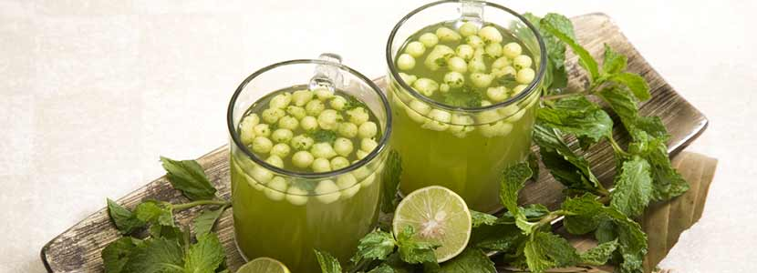

JalJeera
It is a very popular drink from north India. It is very cooling and
is an ideal drink for hot Indian summers. Apart from cooling properties
jal jeera is also used as an appetizer because of its digestive properties.
Jal means water and Jeera means cumin. so the literal translation would be cumin water. However, it is far from tasting earthy and peppery like cumin water.
I have had cumin water many times and I know its taste.
Ingredients
- Cumin seeds
- Fennel seeds
- Dry mango powder
- Mint leaves
- Black Pepper
- Black salt
- Ginger
- Tamarind
Steps
- Soak 1 tablespoon tightly packed tamarind in ¼ cup hot water for about 20 minutes
- Rinse ⅓ cup loosely packed fresh mint leaves well with water. Drain all the water. Add the mint leaves in a small grinder jar. Only use the mint leaves. Do not add the stems as then the jal jeera can become bitter.
- Add the soaked tamarind along with its water. Make sure there are no seeds in the tamarind.
- Add the following spices – 1.5 teaspoons cumin seeds, 1 teaspoon fennel, ½ teaspoon black pepper and seeds removed from 1 black cardamom. Discard the outer cardamom cover. To get the seeds, just lightly crush the black cardamom in a mortar-pestle and then remove the seeds
- Next add 1 teaspoon amchur powder (dry mango powder), 1 teaspoon chaat masala, 1 pinch asafoetida (hing) and black salt as required. If you do not have dry mango powder, then you can add some lemon juice. Instead of dry mango powder, kachri powder or bel powder can also be used. Instead of black salt, you can use rock salt or sea salt
- Grind to a smooth chutney. If you want you can even strain the chutney using a tea strainer
- Take the jaljeera chutney in a bowl. Also add 1.5 cups water
- Mix very well. Check the taste of jal jeera and add more salt and dry mango powder if required. You can also add some lemon juice if you want. if in case the jaljeera tastes bitter (due to the type and quality of mint leaves), then add some lemon juice to balance the bitterness. Keep it for a few hours in the refrigerator
- While serving you can add some boondi, a pinch of chaat masala and a few mint leaves in each glass. Boondi can be soaked in water for 20 to 30 minutes. Later squeeze the water and keep them aside. Add boondi while serving jaljeera